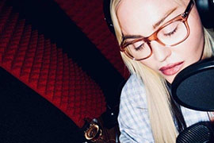

Madonna anuncia volta ao estúdio e promete: "Algo novo está chegando"
A cantora compartilhou a novidade nos stories sem dar muitos detalhes
Tem música nova da Madonna vindo por aí! E quem compartilhou a novidade foi a própria rainha do pop. Dessa vez ela está preparando um feat com o rapper e compositor Swae Lee. Nos stories do Instagram, Madonna compartilhou uma série de imagens com o rapper. “É tão bom estar de volta ao estúdio fazendo música novamente”, escreveu a cantora.
Em um dos stories ela dá a entender que a novidade deve chegar a qualquer momento. “Algo novo está chegando em breve!”, escreveu Madonna com emojis relacionados à música e ao inverno.
Quanto ao que exatamente está por vir, os fãs especularam que é um remix para sua música, Frozen. Outros insistem que é apenas um feat com Swae Lee. Eles já trabalharam juntos anteriormente em sua música Crave do álbum Madame X em 2019.
No entanto, a notícia de sua futura parceria chega logo depois que a rainha do pop fechou um grande contrato com a Warner para não apenas preparar novas músicas, mas lançar edições de luxo de seus álbuns clássicos.